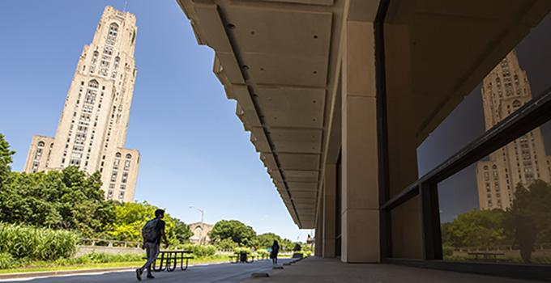

MS Master’s program
Master of Science
Build core skills in intelligent systems and put them into practice through a faculty-advised project.
Explore the MS programUniversity of Pittsburgh / Graduate study
Explore artificial intelligence through a multidisciplinary graduate program in Pitt’s School of Computing and Information.

01 / Graduate programs
Two graduate degrees. A shared focus on intelligent systems, faculty collaboration, and applied artificial intelligence.
Build core skills in intelligent systems and put them into practice through a faculty-advised project.
Explore the MS programWork with ISP faculty to develop your research and progress toward a dissertation in intelligent systems.
Explore the PhD program02 / Research
Explore research areas represented in the ISP community, from how people learn to how computers understand language.
Explore research areas03 / Student life & support
Practical guidance for registration, advising, research, and the milestones ahead.
Browse student resources →